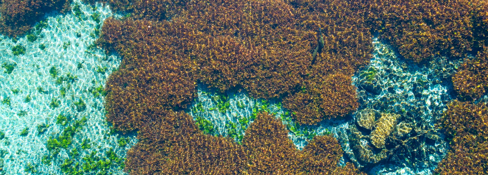

Edwards Aquifer Habitat Conservation Plan
Spring 2026 Research Meeting
A one-day conference highlighting current research efforts around the Edwards Aquifer and the
Edwards Aquifer Habitat Conservation Plan.

Free Event – Lunch Provided · RSVP: kkollaus@edwardsaquifer.org
Program
The list below shows all scheduled talks. Abstracts will be added as they are finalized.
| Presenter | Affiliation | Session | Title | Abstract |
|---|---|---|---|---|
| Chad Furl, Ph.D. P.E. | Edwards Aquifer Authority | State of the Springs | Opening Remarks | Read abstract
Opening remarks
|
| Paul Bertetti, P.G. | Edwards Aquifer Authority | State of the Springs | Edwards Aquifer Hydrological update | Read abstract
Hydrological update
|
| Christa Kunkel, M.S. | Bio-West, Inc. | State of the Springs | Springs Biological update | Read abstract
Biological update
|
| Hakan Başağaoğlu, Ph.D. | Edwards Aquifer Authority | Edwards Hydrology | AI-derived recharge estimates to the Edwards Aquifer | Read abstract
We present a serial hybrid eXplainable Artificial Intelligence (XAI) framework that leverages U.S. Geological Survey (USGS) recharge estimates to train and evaluate XAI model predictive performance. Applied to two Edwards Aquifer basins, the XAI model accurately reproduced USGS recharge estimates and effectively captured high- and low-recharge events. The XAI model predicted three subtle recharge events in the Bexar basin test dataset that were not captured by the USGS approach. These predictions were corroborated by independent hydroclimatic measurements, HSPF simulations, and GRACE groundwater storage anomalies. SHapley Additive exPlanations (SHAP) revealed basin-specific recharge drivers: antecedent soil moisture dominated in the Nueces basin with perennial streams, whereas current-month precipitation was the primary driver in the Bexar basin with small ephemeral streams. Each driver explained ~32% of the variability in recharge estimates. SHAP further enabled probabilistic identification of hydroclimatic conditions favorable for enhanced recharge. Climate projections under CMIP6 scenarios indicate declining large recharge events through 2100, highlighting potential long-term groundwater sustainability risk.
|
| Debaditya Chakraborty, Ph.D. | University of Texas at San Antonio | Edwards Hydrology | Short-term AI-based springflow predictions at Comal and San Marcos springs | Read abstract
Accurate prediction of spring flows and groundwater levels is essential for proactive management of the Edwards Aquifer and the protection of spring ecosystems that sustain federally listed species. This presentation reports the results of a systematic evaluation of five AI models, including LSTM, CNN, Transformer, Randomized Trees, and XGBoost, for 1-to-12-week forecasting of flows at Comal Springs and groundwater levels at the J-17 index well, trained on approximately 79 years of hydroclimatic records (1946–2025). XGBoost consistently achieved the highest accuracy (R²≥0.94) and strongest agreement at Critical Stage thresholds (>90% at CS1–CS3 across all horizons), whereas deep learning models exhibited progressive degradation at extended lead times. Building on this validated forecasting engine, we introduce a prototype decision intelligence concept illustrating how these short-term hydrologic forecasts could support Critical Period Management, conservation evaluation, HCP cost projections, and other mitigation planning – bridging the gap between predictive science and operational drought management.
|
| Changbing Yang, Ph.D. P.G. | Edwards Aquifer Authority | Edwards Hydrology | Quantifying Recharge Basin Contributions to Springflow in a Karst Aquifer using Soluble Transport Modeling | Read abstract
This study applies a solute‐transport modeling framework to quantify the contributions of major recharge basins to springflow in the Edwards Balcones Fault Zone Aquifer (EBFZA). The analysis focuses on two key questions: (1) What percentage of springflow at Comal and San Marcos Springs originates from each recharge basin? (2) What percentage of recharge within each basin ultimately contributes to the flows of these springs? The modeling approach was first tested using synthetic cases and then applied to the EBFZA. Preliminary results suggest that Comal Springs is mainly supported by recharge from the Nueces and Frio Basins, whereas San Marcos Springs is primarily sustained by recharge from the Blanco and Comal–Dry Comal–Cibolo Basins. The accuracy of these estimates depends on the underlying groundwater flow model. Ongoing work will incorporate additional constraints, such as groundwater chemistry and isotopic data, to further improve the approach.
|
| Tyson McKinney, M.S. | Austin Watershed Protection Department | Edwards Hydrology | Determining Post-Storm Wait Times to Ensure Baseflow Conditions for Water-Quality Sampling: A Case Study from the Edwards Aquifer, Central Texas. | Read abstract
Austin Watershed Protection (AWP) collects quarterly baseflow geochemical samples from six springs in the Barton Springs Segment of the Edwards Aquifer for regulatory compliance and long-term trend analyses. Historically, surface water protocols have guided post-storm wait times for sampling, though preliminary data suggest that those wait times are insufficient to ensure baseflow conditions for several of the springs. This study uses continuous specific conductivity data and Gage Adjusted Radar Rainfall (GARR) to calculate wait times for each spring following storms of different magnitude. Preliminary results indicate wait times ranging from 7 hours to more than 7 days. Continuous monitoring will continue until data have been collected for at least two years each under low (<40 cfs), medium (40-80 cfs), and high (>80 cfs) discharge conditions, defined by the cumulative flow from the Barton Springs complex. Thus far, all analysis for this study has occurred under low discharge conditions.
|
| Ben Hutchins, Ph.D. | Texas State University - Edwards Aquifer Research and Data Center | Data Repositories | The Aquifer Biodiversity Collection at the Edwards Aquifer Research and Data Center | Read abstract
Occurrence records serve as the basis for ecological studies and inform conservation and management decisions. Curated specimens are the gold standard for occurrence records, facilitating verification of published data and generation of novel information (e.g., new occurrence records and genetic or demographic data). Groundwater-obligate invertebrates feature prominently on Texas’ state and federal protected species lists, highlighting the need for high-quality occurrence data. Since the 1970s, Texas State University has maintained a substantial groundwater invertebrate collection and now serves as the primary repository for new material. Collections data, however, were not digitized, limiting their utility. With a grant from Texas Parks and Wildlife, over 10,000 specimens from around the state have now been databased and made available online. The database includes over 52 ‘species of greatest conservation need’ from over 251 locations. With anticipated annual growth of approximately 1000 lots, the collection will be an important component of future database projects supporting researchers and resource managers.
|
| Bryan Anderson, M.S. | Edwards Aquifer Authority | Data Repositories | The Edwards Aquifer Authority Environmental Data Portal | Read abstract
Since its inception, the Edwards Aquifer Authority (EAA) has prioritized environmental data collection. What began with a small number of analog chart recorders measuring continuous groundwater levels has evolved into a robust monitoring network of over 160 sites across the Edwards Aquifer region. The network collects high frequency measurements of groundwater levels, water quality parameters, precipitation, and meteorological variables from wells, springs, streams, rain gauges, and weather stations. While these data have long been available by request, the EAA Environmental Data Portal was launched in Spring 2025 to provide streamlined, on-demand public access to these datasets. The portal features interactive maps, detailed site information, and data downloads for EAA managed monitoring sites, along with links to additional hydrologic data sources for the area. The Environmental Data Portal is designed to facilitate scientific analysis, long-term trend evaluation, and resource management decision making by improving data accessibility and transparency.
|
| Pete Diaz, M.S. | U.S. Fish and Wildlife Service | HCP Biology | Occupancy and Site Level Estimates of Abundance for the San Marcos Salamander (Eurycea nana) | Read abstract
Abstract pending.
|
| Nate Bendik | Austin Watershed Protection Department | HCP Biology | Restoration of Spring-Run Habitat Improves Abundance and Juvenile Survival for Endangered, Highly Endemic Salamanders. | Read abstract
Habitat loss and degradation are leading causes of extinction and endangerment for species worldwide. The goal of habitat restoration is to reverse habitat loss and improve the probability for species to persist. Barton Springs salamanders inhabit both surface and subterranean waters, but most of the latter is inaccessible for restoration. Of their surface habitat, almost all of it has been modified or destroyed by regular disturbance and constructed impoundments within and around the springs. In accordance with a Habitat Conservation Plan, the City of Austin restored a 21 m spring run (buried for almost 100 years) to expand habitat for endangered salamanders. Using data from an 8-year capture-recapture study, we examined changes in abundance, survivorship, and movement affiliated with the existing and newly created habitats. We documented improvements in several population metrics, including a dramatic increase in carrying capacity at the site.
|
| Chris Riggins, M.S. | Texas State University - The Meadows Center for Water and the Environment | HCP Biology | Control Enhancement Research of Suckermouth Armored Catfish | Read abstract
Since 2013, the Edwards Aquifer Habitat Conservation Plan includes the targeted removal of invasive suckermouth armored catfish (SAC; Loricariidae) in the San Marcos River, aimed at reducing impacts to the critical habitat of federally protected species. This year, those efforts are set to reach over 20,000 SAC removed from the river. Alongside removal efforts, a decade of research has provided insight into SAC population dynamics, movement, behavior, and spatial distribution within the river. Studies have evaluated biomass reduction through spearfishing efforts, documented dispersal using PIT tag technology, examined population structure during dewatering events, and estimated abundance using underwater camera surveys. These efforts have informed Best Management Practices by identifying predictable behavioral patterns, dispersal potential, and habitat preferences that improve removal activities. Continued integration of monitoring and adaptive management is helping refine suppression strategies and move management closer to the goal of functional eradication of SAC within the San Marcos River.
|
| Austin Davis, M.S. | San Antonio River Authority | HCP Biology | Apple Snails: Big Snail, Even Bigger Problem | Read abstract
Invasive species have long been recognized for their ability to disrupt habitats, degrade ecosystems, and create significant economic challenges. Many of which have been influenced or intensified by human activities (Gentili et al., 2021). With that in mind, given the growing threat and spread of invasive species across the United States, it is crucial to assess their impact and develop coordinated strategies to address their presence effectively. For the San Antonio area and the immediate surrounding counties, there have been several species introduced throughout the years that have had ecological and economic effects. Most recently, management efforts have focused on the Giant Apple Snail (Pomacea maculata). The combination of reproductive efficacy, lack of natural predators, and favorable habitat have allowed the snail to flourish in the San Antonio River, causing several ecological and economic impacts. Utilizing a multi-discipline approach and continual learning, the aim is to confront the issue of invasive species from various angles, so the risk of their introduction and negative impacts are reduced as much as possible.
|
Logistics
Date & Time
April 15, 2026 · 9:00 AM – 3:00 PM
Location
LBJ Student Center, Room 323
Texas State University · San Marcos, Texas
Check-in
Check-in and name badges available outside Room 323 starting at 8:30 AM.
Food & breaks
Morning and afternoon coffee breaks are provided.
Lunch is provided for all registered attendees.
Parking
Please see parking maps at the link below. The LBJ Student Center is immediately adjacent to the LBJ Parking garage. Directions to the parking garage are available on Google and Apple maps.
Please bring your parking ticket to meeting, we will validate.